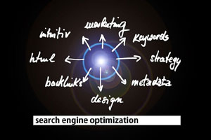

BLOG
Smart Ways to Simplify Your Work with Dokit Tools
🧩 Metadata Editor
Remove Private Info Before Sharing
Before sending a PDF contract or report, hidden metadata can reveal sensitive details such as the author’s name or document history. A freelance designer once used Dokit’s Metadata Editor to clean a proposal before sending it to a client — ensuring complete privacy and professionalism.
Try Metadata Editor⚙️ Merge/Divide
Combine Reports or Split Documents
Imagine preparing a single report from multiple PDFs. With Dokit’s Merge tool, you can upload several files and instantly combine them into one polished document. A marketing manager used it to compile five campaign reports for a presentation. And when they needed to separate chapters later, the Divide option handled it perfectly.
Explore Merge/Divide🗜️ Compression
When File Size Becomes a Problem
Many universities or job portals reject files over 10MB. A graduate student reduced a 25MB thesis to just 4MB using Dokit’s Compression tool, making submission stress-free without losing quality. Professors couldn’t even tell it was compressed.
Use Compression Tool🖼️ Image Conversion
Turn Scanned Notes into PDFs
If you’ve photographed handwritten notes or signed documents, Dokit’s Image Conversion tool transforms those JPEGs into a single, clean PDF — perfect for formal submissions or personal archives. Students especially love it for digitizing notes before exams.
Go to Image Conversion🔒 Security
Lock or Unlock PDFs Easily
One startup used Dokit’s Security tool to lock its project proposal before sending it to investors. Later, the same team used the Unlock feature after misplacing their password. This small feature can save hours of stress when handling confidential files.
Visit Security Page👁️ Viewer
View PDFs Anywhere, Instantly
While traveling, a consultant needed to review a contract but didn’t have a PDF reader installed. With Dokit’s Viewer, they simply uploaded and previewed the file directly in the browser — no software, no delays, just instant access.
Open Viewer ToolDokit is designed to make document handling simpler — for students, professionals, and creators around the world.